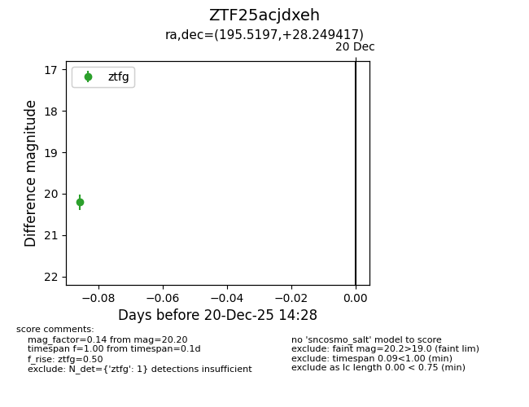
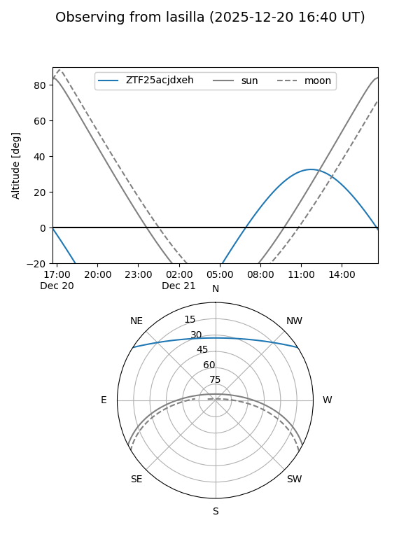
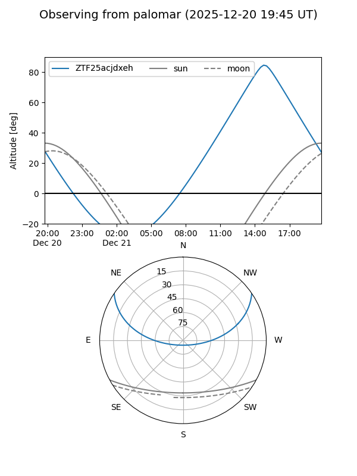

ZTF25acjdxeh
Target ZTF25acjdxeh at 2025-12-20 14:29
Aliases and brokers:
FINK: fink-portal.org/ZTF25acjdxeh
Lasair: lasair-ztf.lsst.ac.uk/objects/ZTF25acjdxeh
ALeRCE: alerce.online/object/ZTF25acjdxeh
alt names
ZTF25acjdxeh (ztf,fink_ztf)
Coordinates:
equatorial (ra, dec) = 195.5197,+28.24942
equatorial (HMS+DMS) = 13:02:04.73,+28:14:57.90
galactic (l, b) = (58.9984,+87.39132)
Flags:
Photometry:
last ztfg=20.20
1 ztfg detections
Lightcurve

Visibility


Additional plots